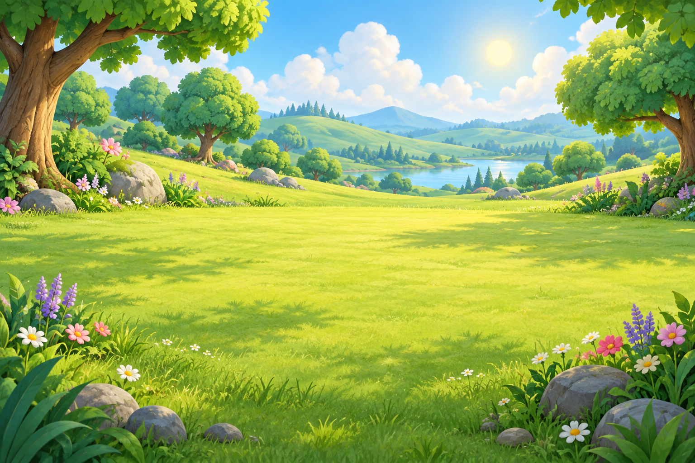
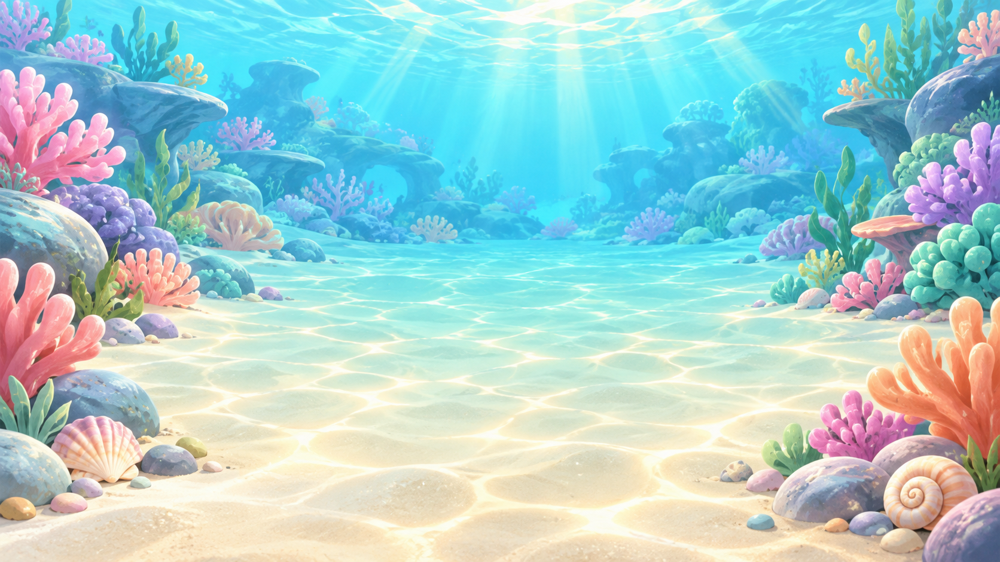
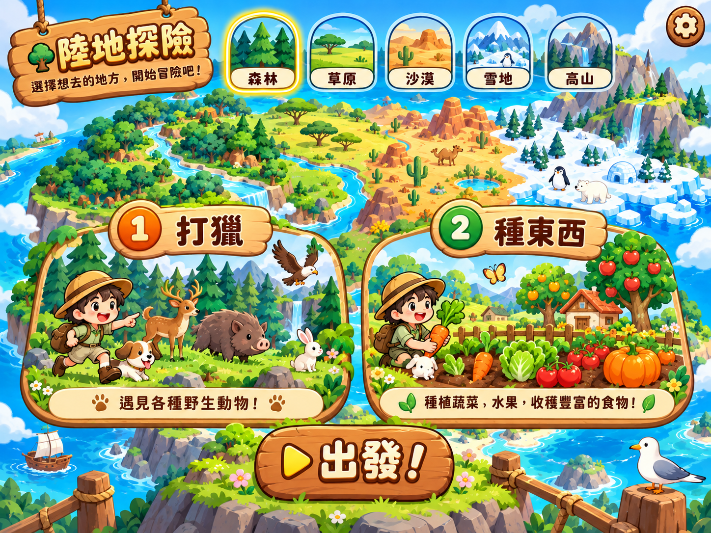
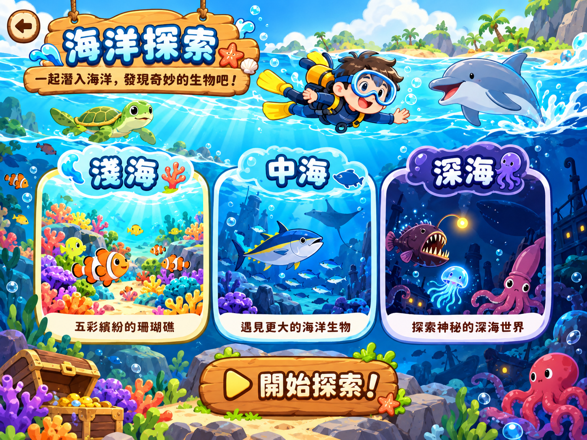

一起出發，發現好多驚喜！


冒險準備中
每次冒險都會自動存檔
試玩商品，之後一起決定。
左手搖桿移動，靠近目標後按右側圖示。陸地使用木劍或種植工具，海洋使用捕捉網。角色需要靠近才會互動。
這是試玩版：陸地動物 +3、海洋生物 +2、收成 +1 金幣；每 10 枚升一級，目前暫試到 4 級。其餘數值與地形仍待孩子決定。
進度保存在這個瀏覽器。NAS 同步遊戲檔案，不會自動同步各台裝置的遊戲進度。
紀錄簿分別累計打獵、海洋捕捉，以及作物的種植／收成數量。舊版没有記錄種類，舊金幣保留，但明細從新版開始。
商店的太陽圈、海洋圈與價格只是今晚試玩的提案，不是孩子已決定的正式商品；買過會記在這台的存檔中。
可把下列文字複製到記事本，另存為 .json 檔，再用「讀取備份」。
會替換這台的進度，不會合併數量。原進度另留一份本機安全備份。
發布成 HTTPS 網址後，可從手機瀏覽器「加入主畫面」開啟。離線遊玩需先成功載入一次。
金幣、武器和種植進度都會重新開始。